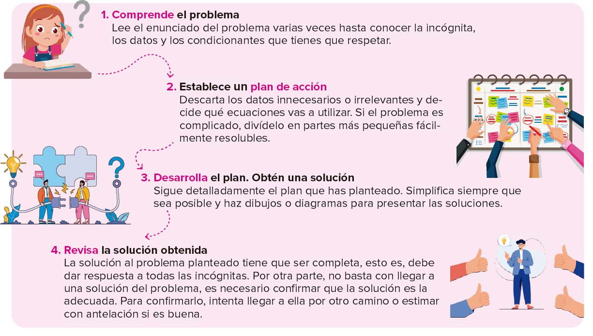
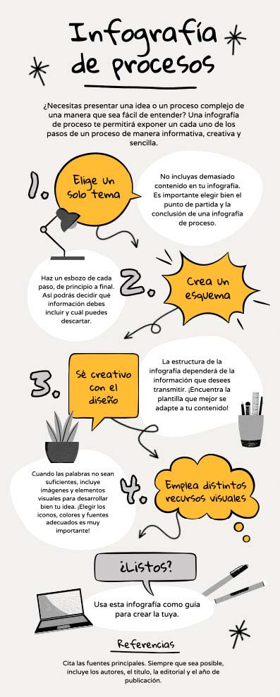
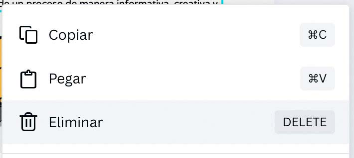
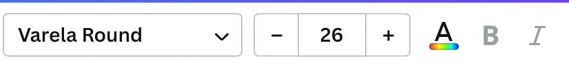
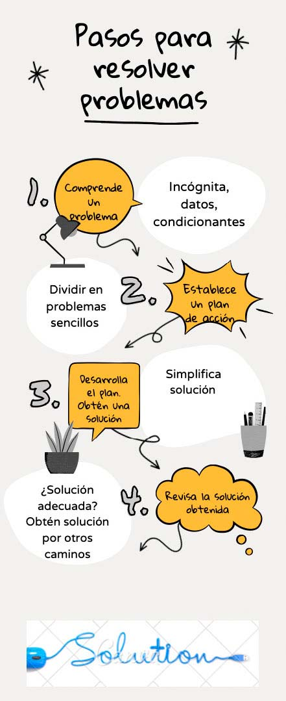
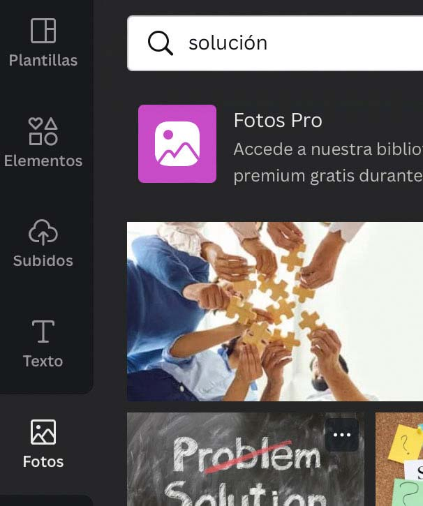

¿Alguna vez te has preguntado cómo resuelven los problemas los ordenadores o cómo funcionan las aplicaciones que usas cada día?
En esta unidad aprenderemos a reconocer problemas cotidianos, diseñar algoritmos que los resuelvan y codificarlos en lenguajes de programación sencillos, como Scratch, para poder comprobar cómo funcionan en la práctica. Además, conoceremos la diferencia entre software libre y software propietario, y cómo analizar y validar programas de forma segura.
En ocasiones, trabajar como lo haría un ordenador nos puede ayudar a resolver problemas de la vida diaria y desarrollar soluciones sencillas y creativas para problemas habituales.
Esta forma de trabajo se denomina pensamiento computacional y consiste en abordar los problemas planteados como si fuéramos científicos informáticos:
A lo largo de la historia, la humanidad se ha encontrado con problemas a los que ha tenido que dar una respuesta para continuar con su evolución.
En la antigüedad, los primeros matemáticos y filósofos utilizaron distintos algoritmos para hallar la solución a los problemas planteados (algoritmos de sumas y restas, cálculos de distancias astronómicas, cálculos de magnitudes físicas, etc.).
Un algoritmo es una secuencia ordenada de pasos que resuelven un problema en un tiempo finito.
Los algoritmos tienen las siguientes características:
Contienen instrucciones concretas, sin ninguna ambigüedad.
Deben terminar, es decir, son finitos.
Todos sus pasos son simples y están ordenados.
Los algoritmos, una vez definidos, se escriben en pseudocódigo. El pseudocódigo, o «código falso», es un lenguaje hecho para que lo entiendan los humanos y no las máquinas, por lo que no puede ejecutarse en un ordenador. La finalidad del pseudocódigo es ayudarnos a detectar errores en los algoritmos y a depurarlos.
Actualmente, todos los algoritmos desarrollados pueden resolverse con la ayuda de los ordenadores y los lenguajes de programación.
Un programa es la traducción de un algoritmo a un lenguaje de programación capaz de ser entendido por un ordenador y procesado por él.
Define los siguientes conceptos: Programa informático, lenguaje de programación, algoritmo.
Piensa y anota el nombre de cinco objetos que tú creas que funcionan mediante un programa.
Escribe un algoritmo con los pasos para calentar un vaso de leche con cacao en el microondas.
Escribe un algoritmo con los pasos para hacer un bocadillo de queso.
AP1.2 Resolución de problemas. Infografía con Canva¶
(C.ESP2 / CE2.1 / IC2-10p PAG 22-23 )
La resolución de problemas es un proceso cíclico: los pasos para resolverlos se repiten una y otra vez hasta encontrar la solución idónea.
Utilizando el pensamiento computacional, ¿qué debes hacer para resolver un problema?

En esta práctica vamos a crear una infografía en la que mostraremos los pasos de la resolución de problemas. Utilizaremos Canva, una aplicación muy útil para elaborar murales e infografías, de uso libre.
Para hacer esta práctica deberás tener el consentimiento de tus padres o tutores legales. Asimismo, recuerda leer detenidamente todas las condiciones de prestación de servicios.
Entra en www.canva.com. La primera vez que accedas a esta página, la aplicación te pedirá que te registres. Puedes hacerlo con tu cuenta educativa de correo.
Una vez que has accedido, observa que aparecen distintos diseños con los que crear tarjetas, pósteres, presentaciones, etc. (figura 1). Haz clic en la opción Infografía.
Figura 1
Entre las plantillas que aparecen, escoge la que se llama Infografía proceso dibujo a mano amarillo gris y negro u otra que te guste (figura 2).

Figura 2
Haz doble clic en el título de la infografía, “Infografía de procesos”, para modificarlo, y escribe en su lugar “Pasos para resolver problemas”.
Ahora, en cada uno de los globos de color amarillo, haz doble clic para poder modificar su contenido. Escribe en ellos las cuatro fases para resolver un problema que hemos visto antes.

Figura 3
En los globos blancos puedes incluir alguna información de interés relacionada con cada una de las fases de la resolución de problemas. No añadas textos muy largos, las infografías tienen que ser muy visuales.
Elimina el resto de los textos que aparecen en la plantilla y que no resulten de interés. Para eliminar un texto, haz clic sobre él, comprueba que se selecciona la caja del texto y después haz clic con el botón derecho sobre la caja del texto y pulsa Eliminar (figura 3).
Elimina también todos los dibujos o fotos que no quieras que aparezcan en la infografía. Sigue para ello las indicaciones del paso anterior.
Selecciona ahora un globo blanco haciendo clic sobre él. Verás que aparece una barra de herramientas en la parte superior para modificar el formato del texto (figura 4). Ponle como tamaño de letra 25 para que se vea mejor. Luego haz esto mismo en los demás globos blancos. Puedes modificar de la misma forma el color de los textos y el tipo de letra, si te parece que quedará todo mejor.

Figura 4
En la barra de herramientas lateral de la aplicación, haz clic en Más y selecciona Fotos. Aquí puedes buscar fotos para tu infografía. Escribe “solución” en el buscador del menú Fotos (figura 5) y verás que el programa te ofrece muchas imágenes relacionadas. Escoge una que te guste y haz clic en ella. Comprueba que la imagen se sitúa sobre tu infografía.

Figura 5
Pincha la imagen y arrástrala para colocarla en la parte final de la infografía. Puedes ajustar su tamaño haciendo clic en los círculos de las esquinas y arrastrando, para hacerla más grande o más pequeña, según necesites.
Tu infografía deberá quedar parecida a la de la figura 6.

Figura 6
Una vez terminada, ve a la barra de herramientas superior y haz clic en Descargar para bajarte la infografía en PDF a tu ordenador. Selecciona la opción Descarga un borrador gratis con marca de agua.
Accede al borrador descargado, haz clic sobre él con el botón derecho y cambia su nombre por UD01_P1_2_nombreapellido. Guarda el documento en tu carpeta de prácticas.
"DESAFIO"
Crea con Canva un cartel en tamaño A4 para la clase de Programación, Inteligencia >Artificial y Robótica. Puedes ponerle un fondo de color y usar letras vistosas para el >nombre de la asignatura. Adorna el cartel con imágenes relacionadas con la asignatura. >Luego descárgatelo y guárdalo con el nombre UD01_P1_3_nombreapellido_desafio1.pdf.
 ¿Cómo resuelven los problemas los ordenadores?¶
¿Cómo resuelven los problemas los ordenadores?¶ AA1.1 Pensando como los ordenadores¶
AA1.1 Pensando como los ordenadores¶ AP1.2 Resolución de problemas. Infografía con Canva¶
AP1.2 Resolución de problemas. Infografía con Canva¶